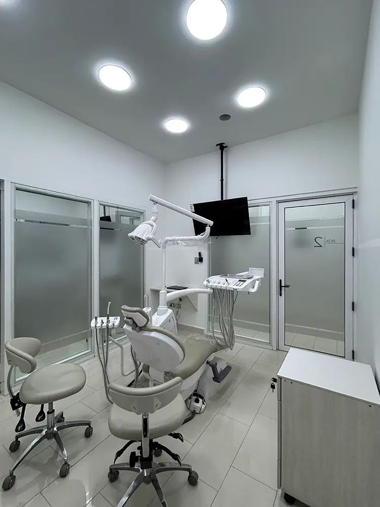

Inicio/Tratamientos
Tratamientos
Tratamientos dentales en San Miguel
Diez especialidades en la misma clínica de Gran Avenida. Todas parten igual: con una evaluación sin costo donde le explican qué necesita y cuánto cuesta.

Especialidades
Qué tratamos y quién lo hace.
- 01
Limpieza, tapaduras y extracciones
Dentistas generales de lunes a sábado. Destartraje, profilaxis, flúor, tapaduras de resina y extracciones.
Atiende: Vicente Rosse, Karen Alvarado, Francisco Pavez, Ramiro Ojeda.
Ver limpieza, tapaduras y extracciones → - 02
Endodoncia
Cuando la caries o una fractura llegan al nervio, el tratamiento de conducto quita la infección y el dolor y salva el diente.
Atiende: Stella Jalin, Magdalena Bignon.
- 03
Encías (periodoncia)
De la gingivitis a la periodontitis avanzada: limpiezas profundas, raspado y alisado radicular y controles.
Atiende: Alejandra Pérez, Nicolás Chandía.
- 04
Implantes, coronas y puentes
Para reponer uno o varios dientes, con cone beam y pabellón en la misma clínica.
Atiende: Javiera Guerra, Fernanda Peake, Paulina Troncoso.
Ver implantes, coronas y puentes → - 05
Ortodoncia
Brackets metálicos, cerámicos, de zafiro y alineadores transparentes.
Atiende: Alexander Schumilo.
Ver ortodoncia → - 06
Dentista para niños
Controles, limpiezas, sellantes y caries en niños hasta 12 años, con odontopediatra.
Atiende: Romina Zúñiga.
Ver dentista para niños → - 07
Muelas del juicio y cirugía
Extracciones complejas, frenillos, quistes y regeneración de hueso para futuros implantes.
Atiende: Víctor Parra.
- 08
Dolor de mandíbula y bruxismo
Dolor al masticar, chasquidos al abrir la boca o tensión en la mandíbula (trastornos temporomandibulares).
Atiende: Guillermo Sandoval.
- 09
Blanqueamiento y carillas
Blanqueamiento profesional y carillas de resina o porcelana. Promoción de limpieza más blanqueamiento: $84.990.
- 10
Estética facial
Toxina botulínica, ácido hialurónico y armonización orofacial.
Atiende: Karen González, Paloma Cantillana, Ramiro Ojeda.
Ver estética facial →
Dudas
Preguntas frecuentes
¿La primera evaluación tiene costo?
No. La evaluación con dentista general es sin costo: revisan su caso, le explican el tratamiento y le entregan el presupuesto.
¿Puedo ir directo con un especialista?
Sí. La hora directa con el especialista lleva un abono previo de $10.000, que se descuenta del valor final del tratamiento.
¿Atienden con Fonasa o isapre?
Por ahora la atención es solo particular: no hay convenios con Fonasa ni isapres.
¿Se puede pagar en cuotas?
Sí, hay cuotas sin interés; depende de cada caso y lo ve la administración. También se paga con débito, crédito, efectivo o transferencia.
Reserve su hora
Le mostramos las horas disponibles al momento.
Escríbanos por WhatsApp y le ofrecemos horas reales de la agenda, o reserve usted mismo la evaluación en línea.